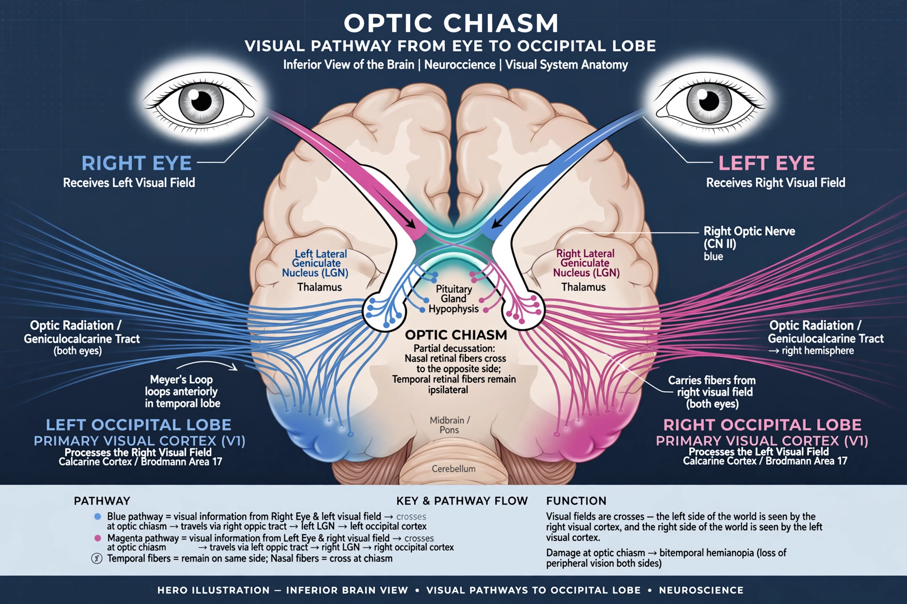

The optic chiasm, or optic chiasma (from Greek χίασμα, "crossing"), is the part of the brain where the optic nerves partially cross. It lies at the base of the brain, just in front of and above the pituitary gland (hypophysis) in the suprasellar region. At the chiasm, fibres from the nasal (inner) half of each retina cross to the opposite side, while temporal fibres remain uncrossed — an arrangement that allows each cerebral hemisphere to receive the contralateral half of the visual field from both eyes.
| Optic chiasm | |
|---|---|
 The optic pathway with the chiasm at its centre | |
| Part of | Visual system; diencephalon |
| Precursor | Optic nerves (CN II) |
| Continuation | Optic tracts |
The chiasm is an X-shaped junction about 8 mm wide. In humans roughly 53% of optic nerve fibres — those from the nasal retina, encoding the temporal visual field — decussate. Behind the chiasm, the optic tracts carry the combined fibres to the lateral geniculate nucleus of the thalamus and onward via the optic radiations to the visual cortex. The degree of crossing across species correlates with how frontal the eyes are and how much the visual fields overlap: predators show extensive crossing, while lateral-eyed prey species cross almost completely.
Damage to the central chiasm — classically from a pituitary adenoma pressing upward — destroys crossing nasal fibres and causes bitemporal hemianopia, loss of the outer (temporal) half of vision in both eyes ("tunnel vision"). Other causes include craniopharyngioma, meningioma, glioma and demyelinating disease. Compression patterns on visual-field testing help localise lesions along the whole visual pathway.